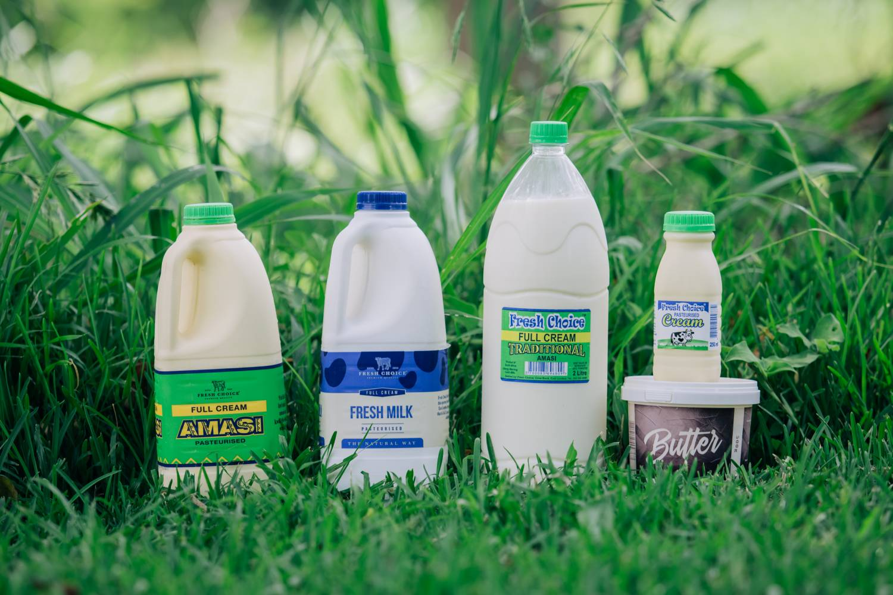
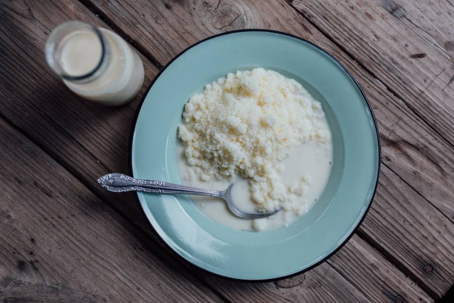
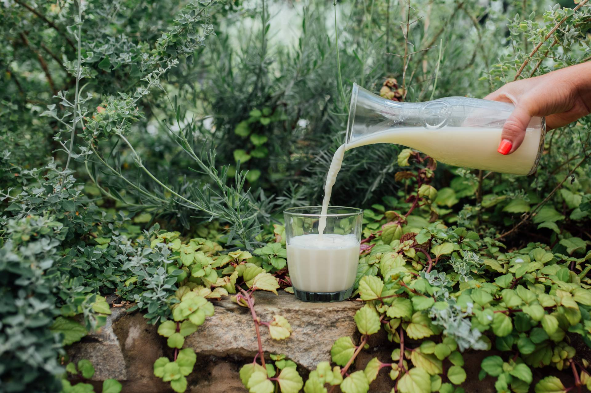
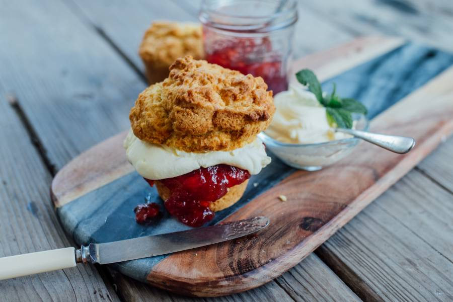
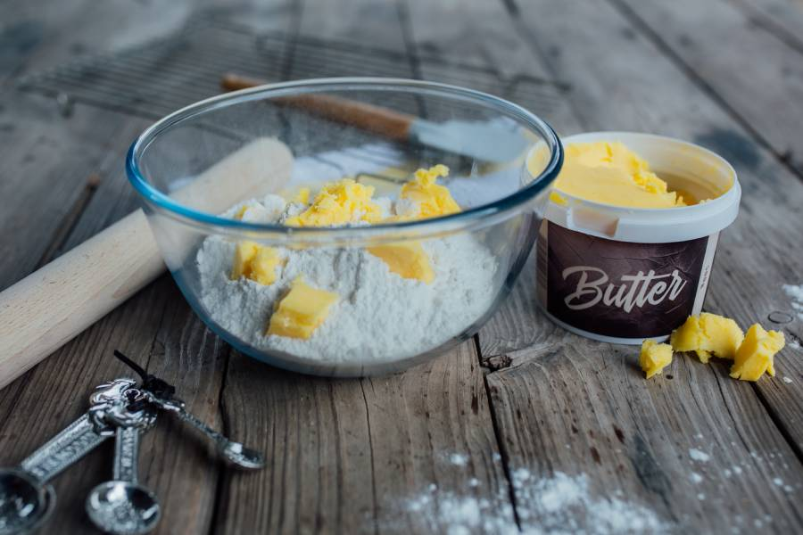
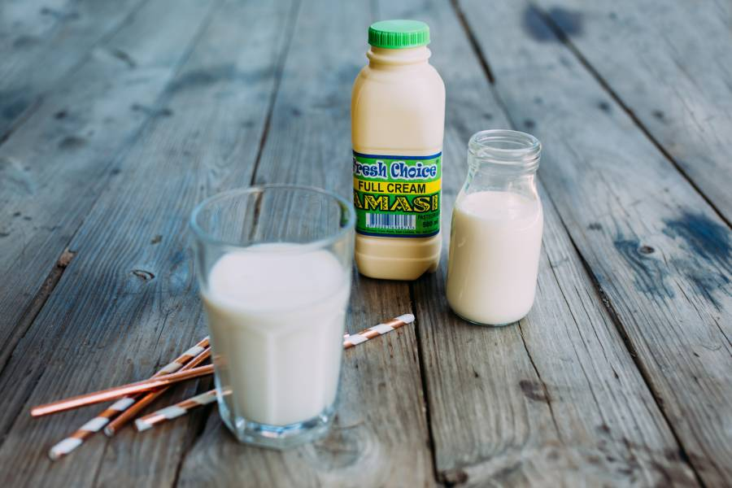

Our Products
Maas Product Range

Pasteurised full-cream maas is a fermented milk product.
This product sold in the following units:
- 500ml
- 1l
- 2l
- 4l
Traditional Maas

A fermented milk product. During the production process, the milk is thermised.
Thermisation is a heat treatment that is applied to milk to reduce the number of spoileage
bacteria with minimal heat damage to the milk. Once this process is complete, the product
is bottled and the milk allowed to 'naturally' ferment, as traditionally left in a calabash
This product is sold in the following units.
- 2l
- 5l
Full Cream Fresh Milk

Our fresh milk is pasteurised but not homogenised. Fresh Choice
believes that milk should be processed as little as possible, and
consumed in the most natural state possible. Homogenisation,
which is not necessary for any food saftey reason, destroys the
sweet, creamy taste of the fresh milk and alters its molecular
structure.
This product is sold in the following units:
- 2l
Fresh Cream

Fresh cream is pasteurised and sold as such. Our cream can be
used for cooking or baking up delicious treats.
This product is available in the following units:
- 1l
- 500ml
- 250ml
Butter (salted and unsalted)

Fresh Choice's butter is traditional farm butter and is made only
from cream, and where applicable, salt is added. The butter is
deliciously creamy, rich and can be used for cooking, baking, or on
freshly baked bread.
This product is available in the following units:
- 500g tubs
Taste the difference

We believe our dairy products should be processed as little as
possible, and consumed in the most natural state possible.
That's why all our products are made with milk that is Full Cream and
Hormone free - this gives them a distinctive smooth taste.